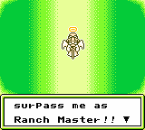
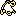

VENCENDO
No dia 30 de Inverno, o espirito do seu avó retornará para a fazenda e dará sua avaliação. Ele dirá a você:
-

- Espirito de Vovô
- Números de galinhas que você tem
- Números de vacas que você tem
- Quantidade de solo que você cultivou
- O total de plantações que você entregou
- Tipo de casa que você tem
- Taxa máxima de amizade da vaca
- Quantidade de dinheiro
- Sua taxa de felicidade
- e os números de Super Bagas que você comeu
Se você cumpriu suas diretrizes para se tornar um Rancheiro Mestre, vovô dará a você um presente. Se não, ele simplesmente aumentará o tamanho da sua fazenda assim você terá mais trabalho para fazer. Obrigado vovô...
Quando ele acaba a avaliação, você aparecerá dentro da sua casa e automaticamente será o primeiro dia da Primavera. Você não terá alimentado seus animais no dia 30 devido ao espirito de vovô aparecer, mas no primeiro dia seus aniamis estarão mais felizes como se você estivesse alimentado eles.
Para se tornar uma Rancheiro Mestre você terá que ter quatro animais adultas de cada, cultivar 1600 peças de solo, entregar 4500 itens, ter uma Super Casa de Madeira de Luxo, ter ganho 65536G, ter uma taxa de felicidade de 250 e comer pelo menos seis Super Bagas. É muito trabalho! Quando você alcança a meta de seu avô ele lhe dará ótimos itens para ajudar você na fazenda.
|  Vara de Pescar >> | Use-a no lago da deusa e venda um peixe por 300G cada |
| Picareta >> | Esmague rochas no oeste da sala da caverna dos Duendes para achar uma Super Baga |
| Guarda-Chuva >> | Faça chover no dia seguinte assim você não tem que regar suas plantações |